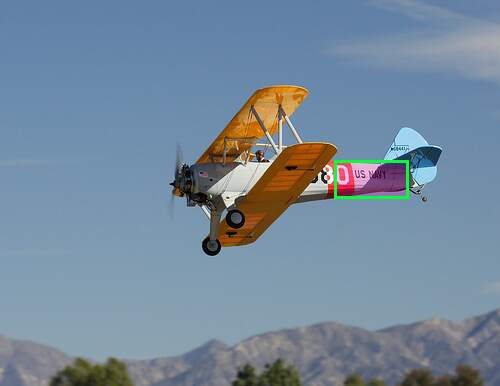
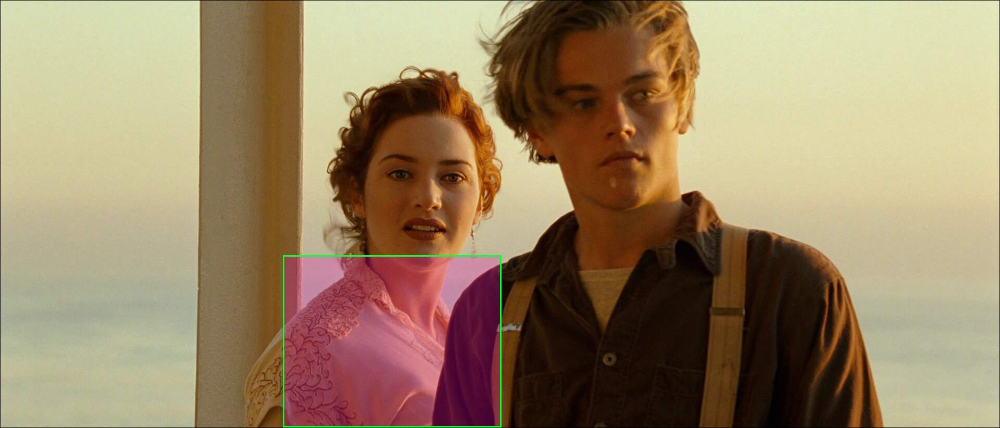
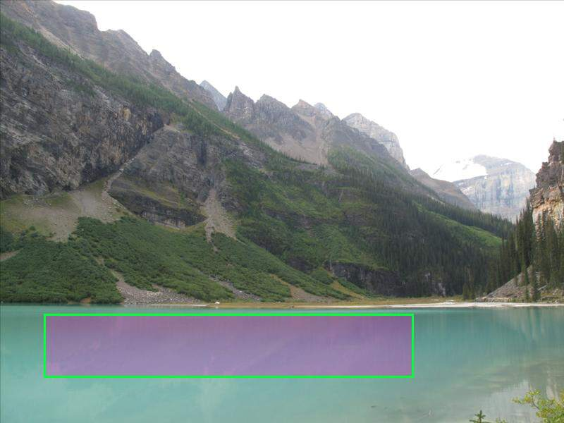
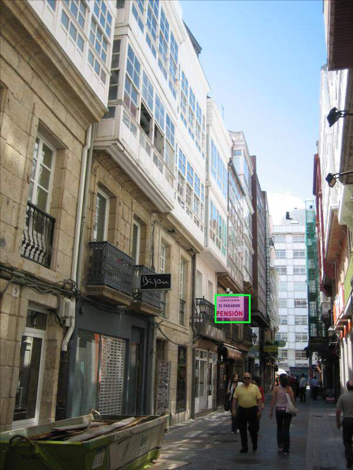

idx=235
true: The cat just got on the man. (rank=17.0/23535)
predicted
- this cat wants to be fed
- This person loves cats as house pet.
- this cat belongs to this woman
- the cat wants food too!
- she is not annoyed by the cat
- the person is cat person
- this person loves this cat very much
- the person likes cats.
- the man is the cat's owner
- the cat belongs to the person there
- this cat belongs to this person
- this man likes cats
- the cat has a playful demeanor
- The resident owns a cat.
- this woman is a fan of cats
- someone loves this cat
- The cat just got on the man.
- he is not allergic to the cat
- the owners like animals
- the owners like animals
idx=12172
true: The cat had just hopped into the sink. (rank=1.0/23535)
predicted
- The cat had just hopped into the sink.
- The owner is ready to bath the cat.
- The owner is bribing the cat with food to take a bath.
- the owner hasn't seen the cat
- the owners like animals
- the owners like animals
- the owners like animals
- the owners like animals
- the owners like animals
- the owners like animals
- the owners like animals
- this was not intended for the cat but instead the person who took the photograph
- this is where the cat lives
- it's owner fawns over it
- someone loves this cat
- the owner of this cat does not punish it frequently
- this cat lives in this home
- The resident owns a cat.
- this is a male cat
- the homeowner owns a cat
idx=5192
true: the food is presented better (rank=354.0/23535)
predicted
- The plate was placed on a kitchen table.
- the plate is to hold the dessert while eating
- someone is about to have desert
- the person taking the picture is having dessert.
- multiple people will be eating from this platter
- people have been eating the donuts and they are good tasting.
- one person is going to eat this tray of food
- the plate can be filled with food
- dessert is next to be served.
- a meal is about to happen but has not begun
- a large meal is about to be served
- someone will eat them
- this is a kitchen table
- more than one person will be eating
- someone is about to eat dessert.
- these are meant to be shared
- the owner is about to eat
- they are about to be served to a guest
- someone is about to sit down to eat breakfast.
- they took some from another table
idx=17289
true: the cat had just fallen asleep there (rank=101.0/23535)
predicted
- the man is the cat's owner
- the owner of the laptop was using it while lying down
- he is the owner of the cat
- he is measuring something on the cat
- he is using a laptop that can't been seen in the picture
- he is not allergic to the cat
- the cat belongs to the person there
- this man likes cats
- the laptop belongs to the person taking the picture.
- The cat just got on the man.
- this cat belongs to this person
- this person is working on something on the laptop
- he is doing work
- he is doing work
- data is being removed from the laptop.
- The person got sleepy while browsing the internet.
- they found a funny video on their computer
- A person nearby is working online.
- someone is taking a break from work while at home.
- the laptop isn't fully charged
idx=10955
true: the plate is hot (rank=106.0/23535)
predicted
- the person had onions in their recent meal
- The person who ordered the greens is health conscious.
- the greens were added after the soup was cooked
- The salad maker wanted a healthy green veggie for the salad.
- the onion was cooked in a pan or grill until marked
- it's a part of a vegetable side dish
- someone wanted to serve healthy food
- whomever will consume this meal likes onions
- the eater values health
- the meal is healthy
- this meal is intended to be low in carbohydrates
- the person is trying to eat healthy
- The one who is about to enjoy this meal is health conscious.
- the person likes to eat healthy foods
- The person eating is health conscious.
- the person eating this is health conscious.
- this is a dinner plate that might be from a set from someone's home kitchen.
- broccoli is very healthy of a food
- broccoli is very healthy of a food
- the person cares about eat healthy
idx=7813
true: there is a fire nearby (rank=83.0/23535)
predicted
- an emergency is happening and the ship is in peril
- The person on the far right is the one responsible for the tower collapsing.
- they are responding to a fire.
- they are trying to put out the fires
- they are standing up in a very deep compartment
- one of them is in a predicament
- A large emergency just happened
- there was an explosion.
- an emergency is happening
- this is a boat that is sinking
- the ship is sinking
- the ship is sinking
- the firefighters are in charge of the truck
- Someone accidentally set off fireworks.
- this ship is sinking right now
- there was a fire.
- there is a danger of this boat sinking
- there was a major accident that occurred minutes ago
- there was an accident
- The people are panicking
idx=19279
true: it is in someones garden (rank=25.0/23535)
predicted
- they are in a garden
- They flowers were recently watered.
- they are at a garden
- the person is outside in a garden
- the flowers need the water
- The host used their backyard for the party.
- they wanted to decorate the back yard
- The flowers are artificial.
- these people living here enjoy gardening
- the flowers are freshly cut.
- This event takes place in a luxurious garden.
- the flowers were purposely planted here
- this is the garden
- This is a garden.
- This is a garden wedding party.
- the area needs to be freshened up
- the area needs to be freshened up
- the area needs to be freshened up
- the area needs to be freshened up
- the flowers are not artificial
idx=21440
true: there is a desk in the apartment. (rank=118.0/23535)
predicted
- people sit here to watch television
- people like to sit and relax in this area
- people are meant to sit around the room
- people can sit and relax on the couch
- it is a modern chair
- someone just ordered the chairs in one place
- This chair is for guests to sit on
- People sit and relax here.
- Space in this apartment is limited.
- This is the living room area.
- people sit and relax on them sometimes
- it is a living room set.
- this room is not being used very much
- someone might need to sit down
- someone might need to sit down
- room for many to sit down
- The chairs are used at the table.
- this is a family room
- this is a family room
- this is a family room
idx=144
true: there is alight on above it (rank=9550.0/23535)
predicted
- The grain is not ready
- This bags contain a type of grain.
- a person is sitting on the rug opening the containers
- the bucket is used for carrying the animal feed.
- the container holds a whole meal
- This container is holding coffee.
- someone is eating beans for protein on a non-meat dish
- it is about to be blended
- this is the cat litter box
- the beans were taken out of the shells
- Someone had just filled the bowl.
- Someone is planting plants in this toilet bowl
- the owner has the barrels as a background
- Someone has planted plants in this toilet bowl
- this is near the sand of a beach
- this is used for storing liquids
- they are seasonings
- It's a clay surface.
- this is corn
- this bowl has water in it

idx=20609
true: The plane belongs to the military (rank=25.0/23535)
predicted
- the plane is owned by a company called LOT
- the plane is from France
- this is not a privately owned aircraft.
- the plane was built for a specific purpose.
- DB is the abbreviation of the manufacturer
- this is the maker of the plane
- pilots wants the plane to be seen.
- this plane belongs a hobbyist pilot
- this is the county this plane is from
- N54P is the blue planes flight number
- the engineers wanted more power for the plane.
- these help the wing to move so it can go higher or lower
- That airplane would fly to Iran
- the plane is lighter and is able to be hung safely
- the plane is owned and operated by a Dutch airline
- this is not a military plane.
- the pilot wants to slow down.
- this is a old model of aircraft.
- This plane relies on a propeller for propulsion instead of a jet engine.
- this plane is part of a polish airline
idx=16332
true: The woman is getting ready to take a drink of her coffee. (rank=41.0/23535)
predicted
- the restaurant serves breakfast and makes sugar available to patrons drinking coffee.
- one of the women is drinking the coffee
- they are about to take a sip of tea
- the time frame was before smoking was banned in restaurants.
- tea is a drink available
- They are having hot coffee with the person sitting beside them.
- the women are drinking coffee
- they are drinking coffee
- this is a cup of tea
- They're taking coffee with them.
- The restaurant serves customers, but they can choose how much sugar and creamer to put in their tea or coffee.
- This cup contains tea.
- they are having coffee for breakfast
- artificial sweetener is in these.
- they had tea with their meal.
- she is having tea
- they are drinking coffee to stay awake
- this is the person drinking the tea.
- they are drinking coffee.
- this is for coffee
idx=7751
true: this is a kitchen. (rank=117.0/23535)
predicted
- They were unloading the dishwasher.
- someone was rummaging through cupboards.
- the occupant of the home recently bought coffee from a local shop and brought it home.
- The person isn't cooking anything else in the kitchen.
- the person has been cooking recently.
- he is done cooking
- The man was serving beverages.
- people were drinking wine before.
- They are cleaning out the dishwasher, and stacking them up to put them away.
- they are washing a cup.
- The air is chilly inside this kitchen.
- The man has poured himself wine.
- The man intends to drink wine later on in the day.
- they are moving towards their table.
- A pot of coffee was made.
- A pot of coffee was made.
- the temperature in the house is pleasant
- The is no dishwasher here.
- they are about to serve drinks.
- rum or drink is available in the house
idx=10989
true: The elephants are apart of the parade. (rank=1.0/23535)
predicted
- The elephants are apart of the parade.
- This is a parade.
- The people are elephant trainers
- this is some type of celebration/parade
- these are working elephants meant for tours
- There is a parade going on
- these are captive elephants
- This is an event or a parade so people came to watch it.
- These elephants are socially connected.
- The elephants are responding to a command
- the elephants are wild, not in captivity.
- these are not wild elephants and are carrying tourists around
- There is a parade happening in the town.
- they are having a ceremony.
- the elephants have traversed the route many times.
- the people are performing for an event
- this is a major event happening
- the kids are related to the elephant trainers
- a ceremony is being held.
- An event is happening near by.
idx=3462
true: this is a restaurant (rank=95.5/23535)
predicted
- The woman is reading the menu.
- she ordered some wine
- they are at a nice restaurant
- it contains the menu items for a restaurant
- it's an upscale restaurant.
- they have not ordered dinner yet
- they have yet to order something to eat and drink
- this is an upscale type of eatery
- the women came to the restaurant together.
- this table is waiting for their order of wine
- they haven't ordered yet
- this is an upscale restaurant.
- they are in a restaurant.
- this is in a restuarant
- they are in a restaurant
- they are in a restaurant
- they are in a restaurant
- This is a fancy restaurant.
- the woman is eating in a restaurant.
- this is an upscale restaurant
idx=21780
true: Someone had recently drank this. (rank=156.0/23535)
predicted
- The glasses are used to serve water to the diners.
- this is white wine in the glass
- this liquid is wine
- this holds wine so it can easily be served at a meal
- there is wine in the glass
- there is wine in the glass
- This cup is filled with wine.
- These glasses contain water.
- this glass has white wine in it
- this is a glass of wine
- the wine has been opened.
- the restaurant serves alcohol with it's meals
- the glass has wine in it.
- there is wine in this glass
- The wine being drank here is expensive.
- people were drinking wine before.
- this is a wine tasting
- Someone set this wine on the table to drink later.
- the glasses have wine in them
- this glass will be filled with water.
idx=21758
true: The man is role-playing a sailor for a performance (rank=4.0/23535)
predicted
- The man is a stripper who is about to perform
- he is part of a theater production
- they are a backstage employee
- The man is role-playing a sailor for a performance
- the performer is a asking for tips.
- it is backstage
- he is a sex worker
- this man is interrupting the act on stage
- the man is a performer
- the man is a cross dresser.
- The man is dressing up as a woman for a performance
- he is the main character of the play.
- They are a performer.
- the person is a performer for the audience
- this is backstage at a theater
- he's dressing up in costume
- there's a costume part going on
- this is a dressing room.
- this is a dressing room.
- he is taking off a costume
idx=12645
true: the unrestrained person is the person who restrained the restrained person (rank=4009.0/23535)
predicted
- The man has just come in from outside
- The man just came from outside.
- This person just came in from outside, and it's cold outside.
- the man rides a motorcycle
- The man is a bit cold.
- the man came from outside.
- The person is a robber.
- The man is just woke up from my slumber at the desk and it's notice something laying on it from the night before
- the wearer of the jacket just arrived home
- The man is Batman
- the man has recently been outside and just returned
- He enjoys riding a motorcycle
- the man just came from outdoors.
- the temperature is really cold in the room
- the man is preparing to go outside
- The man rode on a motorcycle to visit friends.
- the man is a suspect in a crime
- It is cold outside and guy likes to wear proper clothing to protect from cold.
- it is cold in this room
- it is cold in this room
idx=2962
true: this room is a bathroom (rank=98.5/23535)
predicted
- The photo is staged for a real estate sale or vacation rental.
- the owner is going for a modern house design
- This house is all in a modern style.
- this is the master bathroom in the house.
- The house is expensive.
- this is a model home
- this room is brand new and has only recently been built
- no one lives in this house currently
- no one currently lives here
- this photo was taken to upload to a real estate site.
- this is an expensive house
- people use it to dry off
- this is someone's expensive house in the summer time
- this home is being staged to be sold.
- This home is next to an ocean.
- this is for washing your face.
- this is very expensive house
- The home was built in a rural location.
- it is a bathroom
- it is a bathroom
idx=18900
true: sweets are being consumed. (rank=988.0/23535)
predicted
- the person holding the fork is a woman
- the dinner is quite formal
- the fork can be used to cut things
- the fork is to eat the dessert with
- this fork is supposed to be used to eat
- This is a married person.
- their pants need held up
- their pants need held up
- their pants need held up
- their pants need held up
- their pants need held up
- the owner values being formal
- the owner likes to be concealed
- the owner wants to be concealed
- this is a military family dinner
- The man and woman are on a dinner date in a home.
- the owner likes warm hands
- The people have just sat down to start dinner.
- the owner likes to be casual
- it's easier to carry on a shoulder.
idx=8444
true: this is outside (rank=369.5/23535)
predicted
- this is a patio table.
- It is a dining room table
- this is an outdoor patio table
- This table has some wear and tear on it due to its age
- this wallpaper is a picture taken of the cat nearby on the table
- this is the dining table
- this is a kitchen table
- this cat is allowed on the table
- this is a dinning table
- this is a home dining room table
- This takes place outside on a patio.
- this is at someone's house
- this is at someone's home
- this a living slash dining room in a private residence
- the dining area is outside
- this is inside someone's home
- this picture was taken inside of a home
- This is a dining table.
- this is a kitchen or dining room area
- The table is made of wood.
idx=19946
true: the area is a library. (rank=18.0/23535)
predicted
- the construction of the library is hundreds of years old.
- the library was once a Christian church.
- It's a jail library
- the library is in regular use by scholars.
- It's a library.
- this photo was taken in a library
- this is a library
- this is a library
- this is a library
- this picture was taken in a library
- this is a library.
- this is a library.
- This is a library.
- This is a library.
- it's a reading room in a library
- They're a part of someone's library.
- The place is a library.
- the area is a library.
- it's a reading room or mini library
- they are in a library.
idx=4764
true: things can be store in them (rank=6.0/23535)
predicted
- this is an old dresser
- this is a dresser
- the case is valuable
- things are put on shelves
- The chest might have blankets and pillows in it.
- things can be store in them
- it is an examining table
- The shelf hasn't been cleaned off in a while
- a desk was created from an old dresser
- someone smashed the shelf hard
- the shelf is very sturdy
- it holds trinkets
- this cabinet has been there for a while
- the case is many years old.
- the woman left it opened on entering
- this is an antique shop
- this is an eclectic store.
- The shelves are located in a store.
- the wooden stand has been discarded
- someone placed the shelves to hold as many items as possible.
idx=22926
true: someone can open it (rank=30.5/23535)
predicted
- this entrance to room
- this is the entrance to room
- it leads to the bedrooms in the house
- this is entrance too room
- this is the door to outside, as opposed to between rooms
- there are clothes in the armoire.
- it is a closet
- it is a closet
- it is a closet
- these doors are inside a home.
- there is another door down the hall.
- the door rolls up
- the room is extremely small
- someone is in the room
- The other door leads to a storage room.
- the room at the end of the hall is a kitchen.
- this is a room inside a building
- this room barely gets used
- this is a closet
- there is storage for clothes
idx=16946
true: The board is for writing correspondence (rank=419.0/23535)
predicted
- she's been playing the piano
- she is singing along to the tune played by the woman on the piano
- this person is a seamstress
- she just got the mail
- they are giving a gift.
- The woman just bought a bottle of champagne.
- she is passing out flowers
- the woman is going to have a drink.
- The woman just received the flowers.
- The woman comes from a wealthy family
- rum or drink is available in the house
- The man is going to give the flowers to the woman.
- The woman is the owner of the mansion.
- this person intends to play the piano
- the woman has taken the book out of the box.
- she is delivering a package to someone for a gift
- someone got a gift
- this is a bottle with liquor in it
- she ordered some wine
- it contains her makeup
idx=19433
true: They are cleaning out the dishwasher, and stacking them up to put them away. (rank=54.0/23535)
predicted
- she is pregnant
- she is pregnant
- the person is pregnant
- the woman is pregnant.
- she is expecting a baby.
- they are bringing a gift.
- she has been delivering a child
- They are trying to pack up lunches for school.
- she just got out of bed
- the woman just got finished cooking
- this is surprise for her.
- they just got out of bed.
- they are giving a gift.
- They prepared breakfast for the family.
- they are helping them up.
- They were unloading the dishwasher.
- they are getting ready to prepare a meal
- the kids put their stuff on it
- there's a surprise on the table
- The child has just gotten out of bed
idx=17137
true: the person who did this was very bored (rank=1154.0/23535)
predicted
- The person with the jacket just arrived after a trip.
- The person put the towel on a hook.
- The room was chilly.
- the wearer of the jacket just arrived home
- they took off their coat to be more comfortable
- someone thinks it might get cold out.
- the temperature is really cold in the room
- it is cold in the apartment
- the owner wants to be warm
- it is cold in the room.
- someone brought it back from a vacation as a gift.
- the owner likes warm hands
- the blanket is made of wool
- it is cold in the room
- it is cold in the room
- the owner likes to be comfortable
- it belongs to a female
- The bedroom is cold
- the person set the bags on top of the bed
- it is cold in this room
idx=11742
true: this man is not wearing hat (rank=13.0/23535)
predicted
- The top hat was a big accessory at the time
- trying to comfort the man
- This takes place in the 1800's.
- This man recently took off his hat
- It's the late 1800s or early 1900s, and proper to wear hats.
- this man is working class.
- this takes place during the 19th century
- this takes place in the 19th century
- he doesn't care about proper riding habits
- this is back in the 1800s
- The man got dressed up to go out on the town.
- this man is an upper-class citizen
- this man is not wearing hat
- he's about to restrain the man
- the person is trying to help the man up.
- this takes places in the 20s or 30s
- this photo was taken in the Victorian era
- he is mourning someone
- this takes place in the late 1800s.
- it is an old time
idx=18272
true: a large number of people were being fed (rank=105.0/23535)
predicted
- They are cleaning out the dishwasher, and stacking them up to put them away.
- They are eating yogurt while cooking.
- the man is preparing dinner
- he is baking cookies for a party he is attending tomorrow
- someone is making a dish that requires a lot of blueberries
- There is a messy meal planned.
- they are going to fill it up.
- it is timing the next batch of cookies
- the owner wants to make a recipe dish
- he is done cooking
- this is the kitchen sink
- some kind of salad is being prepared
- it is being prepared to go into the oven
- someone likes to make homemade food.
Someone likes to make things from scratch.
- the owner is working on a recipe
- the man's been grocery shopping
- they are following a recipe
- the person is making something now
- there is a lot of food processed in this kitchen.
- they are getting ready to cook but haven't started
idx=1110
true: this man is shirtless (rank=1.0/23535)
predicted
- this man is shirtless
- he was working out
- he was just working out
- The man is a stripper who is about to perform
- he is a model
- he is very confident about his body
- the man is attracted to the woman
- the man works in the lobby
- The man was waiting for the woman.
- he is wet
- he is asking the woman out
- he is feeling flattered
- he sees a woman he likes
- he finds her attractive
- he is confident
- he is confident
- he is confident
- he is about to leave the building
- the person has been working out
- he is in a relationship with the woman
idx=6285
true: this is a tropical climate (rank=50.0/23535)
predicted
- this is in a warm country
- This is in a humid climate.
- This scene is taking place in a middle eastern country.
- This is in a tropical country
- this is in a tropical country
- This is in an area that has a humid climate.
- they are in dry climate country
- This is located in a warm climate
- This is a warm climate.
- This is a warm climate.
- this is in a tropical region.
- This area is a very warm climate
- this is a warm climate area
- this is in warmer climate
- the location is in a warm geographic area
- This is a tropical area of the world.
- the climate is warm
- this is a warm tropical environment
- this is in a very hot country
- this is in a tropical area
idx=22505
true: The guy just got bit by a mosquito. (rank=1650.0/23535)
predicted
- The girl is about to catch the frisbee.
- she is playing frisbee
- she is not participating in the frisbee action with the others
- she is about to throw the frisbee
- They all intend to catch it.
- she is getting ready to throw the frisbee
- he kicked the frisbee
- this person intends to catch the frisbee
- the weather is not cold or rainy
- the weather is not cold or rainy
- the weather is not cold or rainy
- the weather is not cold or rainy
- the weather is not cold or rainy
- the weather is not cold or rainy
- the weather is not cold or rainy
- the weather is not cold or rainy
- the weather is not cold or rainy
- the weather is not cold or rainy
- the weather is not cold or rainy
- the people playing Frisbee just recently got out of school
idx=1031
true: This is in a rural town. (rank=375.0/23535)
predicted
- This tennis court is located in a park.
- this is a private area
- this is a private area.
- This is a secure and private yard.
- This location is at a private park.
- this tennis court is located in a neighborhood
- This is a private and secure location.
- the photo is taken inside a park
- the court is enclosed.
- this area receives plenty of rain
- the area receives plenty of rain and sun
- this is a park facility.
- it is there to stop tennis balls from leaving the court
- it keeps balls in
- This isn't a park.
- There is a tennis court there.
- This is a park or wooded area.
- this place gets a lot of rain
- There are two courts here.
- there is private property behind the fense
idx=4415
true: a snowmobile has driven past this area recently (rank=1.0/23535)
predicted
- a snowmobile has driven past this area recently
- Many people have passed through this path.
- The footprints show the path where this person has just walked.
- people were walking here recently.
- there have been few to no skiers here before
- a snowmobile has driven past recently
- People were skiing.
- people have walked on this snow recently
- the trail is for beginner to intermediate skilled skiers.
- a snowboard made this indentation.
- nobody has skied here recently outside of the person in the picture
- a vehicle has passed through this area.
- somebody has skied down the slope.
- these imprints are hoof prints
- this is the route the skiers will take once competition begins.
- This is a highly frequented location.
- many people have crossed this area already
- other people have been down the hill before.
- the land has been plowed recently
- This is a highly frequented ski slope.

idx=19261
true: the weather is great for plants (rank=380.0/23535)
predicted
- this bench is sometimes used for admiring nearby plants
- this is a historical garden
- this is a formal garden
- People sit here to relax after walking.
- The bench allows people visiting the park to sit and take a break.
- There is a nice park to sit by and watch
- this was created by a landscaper
- this is a spot to sit and eat
- this is an area intended for people to sit down and rest
- the shrubs were recently landscaped since their shape is very neat in appearance.
- the weather is great for the bush
- This bench is in a park.
- this is a place intended for people to sit and rest
- this is a place intended for people to sit and rest
- this is a nice quiet spot to relax
- this is a place intended for people to sit down and rest
- people sit on it when tired
- people sit on it when tired
- This is a place to sit down and rest.
- the benches are designed to offer rest
idx=3606
true: This is the head chef in charge. (rank=2.0/23535)
predicted
- she is a professional chef
- This is the head chef in charge.
- this person is a cook
- this person is a cook
- the person is a cook.
- they are a cook
- the man is a professional chef
- they work with food
- they are in charge of preparing the food
- the class will be learning about cooking
- This is a professional kitchen.
- this is a professional kitchen.
- the owner is a chef
- this is an employee for this restaurant
- they work at a restaurant
- this is the kitchen area with chefs working
- there job requires the uniforms
- The woman is currently cooking something
- she is cooking
- the person is a baker
idx=9529
true: this car is being towed. (rank=7.0/23535)
predicted
- It would be bank robber drove the truck to the front of the bank
- The white truck is old.
- the driver has come out of the car and gone to the auto shop office to inform them of a car being towed in.
- this is a used car lot
- The action is taking place in the 1970s-1980s.
- The driver has parked the truck and gone inside the building.
- this car is being towed.
- this photo was taken in the 1970's
- this photo was taken in the 1970's
- the year is after 1980 when Cadillacs with that front end style were introduced.
- the cop will pull over the low rider
- this is from the 1970s
- the truck has just arrived at the scene.
- This car is towing a vehicle behind it
- This is in the 1980s.
- this is a car sales lot.
- this takes place in the 1980s.
- somebody else is getting in the van.
- It is the 1970s
- This was taken sometime in the 80's.
idx=2561
true: The weather is cool but not cold. (rank=206.0/23535)
predicted
- This person just came in from outside, and it's cold outside.
- The man has just come in from outside
- it is winter time and he's cold
- it's in the winter
- The man just came from outside.
- his photo was taken during the Winter months
- it is cold in the apartment
- the wearer of the jacket just arrived home
- the man just came from outdoors.
- it is cold in this room
- it is cold in this room
- this photo was taken during the Fall or Winter months
- the weather was chilly that evening
- the photo was taken during the winter months.
- the weather outside is cool
- the weather outside is cool
- it is chilly where he is
- this photo was taken during the Winter months
- this photo was taken during the Winter months
- this photo was taken during the Winter months
idx=6771
true: Children have access to art supplies in the house. (rank=1.0/23535)
predicted
- Children have access to art supplies in the house.
- a kid drew it and their mom put it on the wall
- There are children who live in the house, and made the artwork.
- this is where the people who live here keep the cereal
- There is a child that was colouring.
- The child is a fan of super hero movies.
- they are into art
- the people like artwork
- the people like artwork
- the people who live here have children
- someone was drawing formations for a sports team
- the people who lives here are big fans of my little pony
- there is a child in the household
- someone collects chicken and rooster items.
- There are children in the house
- someone here loves astronomy
- The child made the artwork at school.
- children live in this house
- Children live in this house
- artwork is pleasing to the eye

idx=431
true: The photo is many decades old. (rank=9676.0/23535)
predicted
- they are on a ship.
- They are on a ship's deck.
- They were on a boat recently.
- the woman lit it to be romantic.
- The people are on a ship.
- they are on a sailboat
- they are on a ship
- they are on a ship
- they are on a ship
- this is on an upper floor.
- they are on a boat.
- these people are on a ship
- the weather is warm and she's dressed comfortably for moving
- The woman comes from a wealthy family
- this is the Titanic
- They are on a boat, rather than outside of a house.
- the woman is borrowing the shirt from someone
- The ship is being held by the person with the bottles child
- this woman is injuring people with the ship
- it's a fancy place and they are at the second floor

idx=4074
true: they are taking a moment to rest after walking (rank=42.0/23535)
predicted
- the man is waiting for a lady
- there are people that often come by
- there are people that often come by
- the man is waiting for someone
- he is waiting for someone
- The man is doing a routine nighttime walk
- there are people that often come by to sit
- there are people that often come by to sit
- there are people that often come by to sit
- there are people that often come by to sit
- there are people that often come by to sit
- The man is resting
- People sit here to relax after walking.
- he lives nearby
- he is waiting for a person
- The person is tired , so he is taking a rest by sitting down
- the person is waiting for a bus or taxi to come
- The bench is dedicated and is made in remembrance of a person
- The man had just sat down.
- the man has just finished eating and wants to rest for a moment.

idx=14792
true: it is warm outside (rank=124.5/23535)
predicted
- These are life jackets, persons are figuring out how they work.
- The boy is helping to row the boat
- The boy is helping to row the boat
- The boy is helping to row the boat
- there weren't enough life jackets for everyone.
- he is passing out life jackets
- the boats are part of a sporting team
- The person is concerned about the safety, something bad is happening with the life vests here.
- he uses the rope to tie off to the dock
- it is very hot on the boat
- These men work on the boat
- this person is responsible for sailing the boat
- this person was pulled from the water
- some will get lifejackets and some will not.
- They were tossed off the boat.
- these people did not want to get their sleeves dirty
- The water is very deep.
- This is their first time riding on a raft.
- they are looking at people drowning overboard
- the raft crew constructed the raft themselves
idx=16926
true: they are at a formal party (rank=256.0/23535)
predicted
- he is the captain of the Titanic
- this man is a butler or servant
- this is the butler of the building
- they are the butler for the residence
- they are the butler for the residence
- The man in the same tux is the man of honor
- these men are the leaders of this organization.
- the man is a person of high importance.
- the man is part of some secret order
- he is a military officer
- he's a high ranking officer
- he belongs to a royal family
- this is a high ranking officer and is in charge of the operation
- they are an important person.
- they are an important person.
- This is a very formal and important event
- they are a villain
- The man is a very wealthy person
- this man is an upper-class citizen
- this is a military officer
idx=9287
true: The man is having a good time (rank=6.0/23535)
predicted
- The man is having a good time with friends.
- the man is smiling for the camera
- The person holding this beer is at a party.
- the man is posing for a picture
- he is not aware that his picture is about to be taken
- The man is having a good time
- he is in a pleasant mood
- The man in black shirt is over 21 years old
- he was asked to pose for a photo
- this man is intoxicated
- this man is smiling
- He is drunk.
- The man is drunk many beers recently and is ready for another one
- the man photographed enjoys a pint of Guinness to relax
- Someone else made the person laugh in the background.
- The man is friends with the two people next to him
- this person was at an event or work.
- the man loves Miller beer
- The man sees the photographer.
- They are posing for a picture
idx=13699
true: many businesses exist around (rank=167.0/23535)
predicted
- this is a jewelry store
- the store in question sells eyewear
- this is how you get inside the store
- this is the entrance to a gift shop
- this building is a retail store
- this is the stores name
- This building is a retail store.
- The building is a florist
- people curious about the time will note the jewelry store
- this store sells tools to the general public.
- this store was built in 1931.
- The person taking pictures stopped at the store.
- there is a store inside
- The building is a store
- the building is a store
- this is the entrance to the store
- this is a hardware store
- The owners of this store are very patriotic
- This is the name of the store
- it is there to make people aware of the store
idx=1478
true: they are taking notes on what they hear. (rank=281.0/23535)
predicted
- The person is getting ready to pay the merchant here.
- The note contains serious information that the man in the suit needs to know, and the man in the coat knows what the note says.
- This is the supervisor of the shop watching the transaction take place.
- The man is examining the items on the table
- they are looking at whats for sale
- the men are going to order food
- they are a couple striking a deal with the man
- This person is a server trying to jot down every order that the people are telling him.
- The man is looking for something to purchase.
- These men recently said their food on the table
- They had a major breakthrough in finding out the location of the item they are searching for.
- They are scientists trying to dig up clues about an item.
- this is the owner of this shop as the are trying to make a sale
- the person is staffing a general goods store.
- the woman is the store clerk
- The person works at the store and is taking an order.
- They are trying to find the location of a person who is shooting at them.
- the woman is suggesting the man to buy a piece of clothing
- they are placing an order.
- The woman is examining the art on the wall if it is a significant clue that they need for the item that they are searching for.
idx=16277
true: this person is speaking (rank=9.0/23535)
predicted
- the man has poor dental hygiene
- this person is happy
- this person is speaking
- this person is speaking
- this person is speaking
- this person is speaking
- this person is speaking
- this person is speaking
- this person is speaking
- this person is speaking
- this person is speaking
- this person is speaking
- this person is speaking
- this person is speaking
- this person is speaking
- this man's mouth is open
- the man is hngry
- the man is a part of a funny gag
- they are yelling
- the man is a vampire
idx=1337
true: they take landscaping seriously (rank=128.0/23535)
predicted
- a lawn maintenance crew was here recently.
- the grass was recently mowed
- the grass was recently mowed.
- The lawn has recently been mowed.
- this grass was recently mowed
- this grass was recently mowed
- this grass was recently mowed
- The grass was mowed by a lawnmower.
- The grass has been recently mowed.
- The grass has been recently mowed.
- this lawn was recently mowed
- this grass has been mowed recently
- it was mowed
- someone mowed it yesterday
- the sun is directly above this grass and beating down on it
- This area is often mowed
- it was mowed yesterday
- this was created by a landscaper
- this lawn is well manicured.
- the time is late afternoon.
idx=12803
true: they car is dropping someone off at the building. (rank=231.0/23535)
predicted
- the driver of the car is waiting to make a right turn
- The car is about to make a right turn.
- The van is driving fast.
- this SUV is driving through the intersection and the light is green for it
- the van can drive at night
- The person will turn the car left to move toward their destination.
- The traffic is free to go.
- this car is registered with the department of motor vehicles
- this car is registered with the department of motor vehicles
- this car is registered with the department of motor vehicles
- this car is registered with the department of motor vehicles
- this car is registered with the department of motor vehicles
- this car is registered with the department of motor vehicles
- this car is registered with the department of motor vehicles
- this car is registered with the department of motor vehicles
- this car is registered with the department of motor vehicles
- the driver must travel slower in the area
- The taxi has a passenger and is taking the passenger somewhere.
- the car was purchased from a Hyundai dealership in the past
- The green light means the oncoming traffic has the right of way.
idx=23492
true: it is part of the car (rank=18.0/23535)
predicted
- the mirror belongs to a car
- The car is still turned on with the driver inside
- the location is in a vehicle
- The car is well-maintained.
- the weather is perfect for a drive
- the car is a sports car
- there is someone in the car
- the car window is down
- they are driving towards the sun.
- This is a side mirror on a jeep.
- the car is in motion.
- the photo is taken from inside a car
- the object reflecting is very clean
- this photo was taken from inside a car
- This is a two-door vehicle
- the person is the one driving.
- they are driving.
- it is part of the car
- the driver is not actively driving
- These people are inside a car.

idx=11032
true: there is no wind today (rank=133.0/23535)
predicted
- the water is clean
- the water is clean
- the canoes will have less chance of capsizing
- the water is from a lake, river, or ocean
- the water is regularly purified
- the water is not supposed to be here
- the location is a lake
- this is a lake
- the currents arent too strong
- a lake is nearby
- it is a lake and not an ocean
- it is a lake
- the canoes/boats will have less chance of capsizing
- the canoes/boats will have less chance of capsizing
- the canoes/boats will have less chance of capsizing
- the water is calm
- the moon is creating an effect on the water from its lunar pull
- This is a lake.
- This is a lake.
- This is a lake.
idx=8689
true: this is a shopping district (rank=95.5/23535)
predicted
- this is a specialty umbrella store
- this is a tie store
- This is a retail clothing store.
- the tie store is located in the United Kingdom
- this it is outside of a shoe store.
- this is a clothing store
- this is a clothing store
- clothes are for sale here.
- the setting is a display of a shop which sells bags.
- these clothes are for sale in a store.
- you can customize an umbrella the way you like it here
- one can purchase clothing in this store.
- the store in question sells eyewear
- This is a store that sells dress clothes
- this is a store front of a store selling items for young children
- this is a retail shop.
- this is a retail store
- this is a swatch store.
- these items are for sale
- The store is selling items during the summer, for swim wear.
idx=1612
true: the giraffe ate the leaves from the branches (rank=4.0/23535)
predicted
- this giraffe is eating from the trees
- the giraffe can easily eat from the trees
- this is not a wild giraffe.
- the giraffe ate the leaves from the branches
- this giraffe is young
- the giraffe has a skin disease
- There are other giraffes in this same area which aren't visible.
- this giraffe is hungry.
- the photographer got the giraffe's attention
- The giraffe just began eating.
- it is in Africa.
- the giraffe is eating grass.
- the giraffe is not wild.
- This is somewhere in Africa.
- this is in Africa
- this is in Africa
- this is in Africa
- this is in Africa
- this is in Africa
- this is in Africa
idx=19482
true: He won the game! (rank=116.0/23535)
predicted
- the child's mother constantly tells him to cut it
- The boy has not had a haircut in a while.
- the boy is posing for a picture
- he was asked to pose for a photo
- this child is a baseball fan
- The boy recently got his hair shampooed.
- he is ready to play.
- this child is happy
- this child is happy
- this child is focusing on the baseball
- he is happy
- he is happy
- he just finished playing a game.
- the boy plays for a baseball team
- he is being playful
- he is having fun
- The boy is preparing to bat next
- he is confident
- he is confident
- he is confident
idx=1844
true: this is a passenger train (rank=92.5/23535)
predicted
- this city provides public transit to its residents
- this city is big enough to have public transportation
- this train is used to transport passengers around the city
- This is a frequent train stop
- this area has a high population and needs more public transportation space than normal
- This train is currently transporting a lot of people
- there is a busy trainyard nearby
- This is a very populated city
- it is transporting people
- it is transporting people
- it is transporting people
- it is transporting people
- it is transporting people
- it is transporting people
- it is transporting passengers
- This city has public transportation.
- commuters are traveling to work.
- Public transportation is very popular in the city.
- this is a busy commuter route
- this city is technologically advanced
idx=9552
true: this is white wine in the glass (rank=3.0/23535)
predicted
- The woman is drinking a glass of champagne.
- this glass has white wine in it
- this is white wine in the glass
- This cup is filled with wine.
- this glass contains a liquid
- this glass contains a liquid
- the man is drinking champagne
- someone is about to make a toast
- this is a glass of wine
- they are waiting to get some champagne
- somebody is offering a toast or speech
- there is wine in this glass
- There was or will be a toast here.
- someone is drinking wine at a party
- This person has been served an alcoholic drink.
- this person intends to drink from this glass
- this person intends to drink from this glass
- this person intends to drink from this glass
- this person intends to drink from this glass
- this kind of glass is used for champagne
idx=2669
true: the pic was taken in the spring (rank=4.0/23535)
predicted
- These are cherry blossoms, blooming, it's spring time.
- the season is spring.
- it is early spring
- the pic was taken in the spring
- it is the very beginning of spring
- it is springtime.
- it is springtime.
- It is currently the season of spring in the picture.
- it is springtime
- it is springtime
- it is springtime
- it is Springtime
- it is springtime
- it is springtime
- It is spring time.
- It is spring time.
- It is spring time.
- It is spring time.
- this photo was taken in the spring time
- it is spring time in this picture
idx=15
true: the event was well advertised (rank=244.0/23535)
predicted
- Everyone is clapping at the performance.
- these are studio audiences
- The man is watching a comedy show.
- this is a show with live audience
- they saw a good performance
- the comedy club is packed out for tonight's show
- this is an audience at a play
- there is music playing and people are dancing on the stage
- they are watching a show
- A comedian is performing here.
- they are in the middle of watching a show.
- they are celebrating something that just happened
- these people are interested in the show being performed
- there is something happening at the front of this room
- They found a good show to watch.
- The man is holding a piece of paper while clapping.
- they are all watching something on stage
- these are contestants on a show
- these people are entertained by the person's dancing
- they are anticipating a play to happen
idx=18628
true: These bracelets were birthday gifts. (rank=681.0/23535)
predicted
- this person it drinking from this cup
- The man and the woman are drinking from these two cups
- The woman intends to drink the contents of the cup.
- this person is drinking from glass
- this person intends to drink from this glass
- this person intends to drink from this glass
- this person intends to drink from this glass
- this person intends to drink from this glass
- this person is drinking from the glass
- she is having tea
- they are about to take a sip of tea
- this man has been drinking from this glass
- he is drinking tea
- he is drinking tea
- this man is drinking from cup
- This cup is filled with wine.
- this glass is intended to be drank from
- someone is drinking using the cup
- this is the person drinking the tea.
- The man with the tea is in charge.
idx=12313
true: this surfboarder won't lose their surfboard (rank=12.0/23535)
predicted
- A person just stood up on this surf board to ride the wave.
- The wave is capable of knocking the man off of the surfboard.
- they take the board surfing.
- this person knows how to stand on the surfboard while in the water
- this person is helping the person stay on the board
- The board is set aside, in case a lifguard on shore sees a person in distant water in distress and needs to quickly get to them, they can take the board.
- The surfboard belongs to the man.
- this person fell off their board into the water
- The man is having trouble standing straight on the surfboard.
- The surfer is experienced
- this board has not seen a lot of use.
- this surfboarder won't lose their surfboard
- a human is trying to surf despite the lack of good waves.
- the person came prepared and is experienced at surfing.
- they want to ride some waves
- they want to ride some waves
- the man will not lose the surf board if he were to fall
- the rope is attached to something solid on the other end.
- the man is riding a surfboard
- the man removed the top part of wet suit
idx=11631
true: this bottle contains a cold liquid (rank=43.5/23535)
predicted
- this bottle has liquid in it that will be drank while eating the pizza
- the people eating at this table are above the age of 21
- The people who gathered to eat this meal are adults.
- this beer bottle has been drunk from already
- This bottle contains beer.
- these glasses hold beer
- The people at the table love to drink alcohol
- the shaker is to season the pizza
- The bottle a special recipe by restaurant.
- The people at the table have already enjoyed some of their pizza and are done eating.
- the glass is very fragile
- the glass is very fragile
- the glass is very fragile
- the glass is very fragile
- the glass is very fragile
- the glass is very fragile
- the glass is very fragile
- the glass is very fragile
- the glass is very fragile
- the people at the table have been drinking.
idx=13783
true: It is sunny outside. (rank=3990.5/23535)
predicted
- This chair is very uncomfortable.
- someone is sitting on the cushion
- someone might need to sit down
- someone might need to sit down
- the woman is in a waiting room
- this chair is very uncomfortable or the person is short
- this chair is being used
- This chair is extremely comfortable.
- this chair is the focal point of the room
- the chair can be sat in
- there is a purse behind the chair
- this couch is sat in frequently
- the owner values comfort
- This chair is a reclining chair.
- this is a waiting room
- this is a waiting room
- someone in the room requires a chair for mobility
- comfort is important.
- They didn't have a shoulder rest.
- no person is sitting on chair
idx=10119
true: She is a young and fashionable woman (rank=12456.0/23535)
predicted
- someone has dry skin.
- the bottles are for wetting hair before cutting
- this person just spit toothpaste into the sink
- things are put on shelves
- it's a dry area where you must put lotion on everywhere.
- this bottle is filled with hand soap
- it is hairspray
- the person living here has dry skin problems
- it will be used to clean a face
- Someone is trying to dry their socks on the radiator.
- the bottles are toiletries.
- The hand soap is going to be squirted into the sink area.
- the shelf is very sturdy
- someone in this room was thirsty
- the shelf is dusted regularly.
- this is a dresser
- this is for washing your face.
- something has spilled and needs cleaned up
- the room will be smelling of smoke
- its hot inside house
idx=1306
true: The man is her father. (rank=667.0/23535)
predicted
- they are collecting specimens
- this kid is helping fill the glass
- the person is expecting to get chilly on their hike
- they are studying geography.
- the man is a naturalist
- they want to give it to someone else.
- this person intends to take photos of things the find interesting
- he is very thirsty
- the boy is reluctant to see what is going to be inside of the pot to eat
- these people are explorers
- The adults are the parents of the child.
- he is thirsty and needs a drink
- he has refreshments in the bag
- this person is bringing drinks to the men
- this is to get some water
- the adult allowed it
- he is drinking water
- these people are writing down what they're observing
- they are a little person
- they are going to fill it up.
idx=9832
true: They will be put on display for sale. (rank=834.0/23535)
predicted
- A person got a call while sorting beads.
- There is a pot of green beads close to this pot.
- the owner wants to protect the original fabric
- the scarf is not done being made
- they are thumb tacks.
- the ties are made of silk
- the beans were taken out of the shells
- someone is doing intricate work.
- someone is making a dish that requires a lot of blueberries
- it is part of a bed
- the owner values comfort
- this is another part of the costume
- The cloth has a lot of small paintings on it.
- They used to be pants.
- There is something made of metal in the holes.
- they are tended too
- the other straps have a similar fastener.
- a person is sitting on the rug opening the containers
- the owner likes to wear overalls
- this is a necklace
idx=1046
true: The camera is used by the person interviewing people (rank=373.0/23535)
predicted
- At least one of the children is still waiting on their order.
- the boy is a student.
- someone want to be heard
- they are placing an order.
- he needs to take notes
- he just ordered some food
- they are taking notes on what they hear.
- he is using the restaurant's wifi
- They are ready to order what they want to eat.
- they need to take notes on the speaker
- the guy is trying to tell the waitress exactly what he wants to order
- They need to be heard.
- someone just gave a speech
- this is to speak into a recording device
- there is audio being recorded
- the young man works at the restaurant.
- This is a microphone, they will sing now.
- mic is being used
- notes are taken at the table
- this person is taking notes
idx=14089
true: It's a soup or sauce. (rank=18.0/23535)
predicted
- it is for dipping the pita and french fries in
- the person drinking the tea is snacking on the biscuit.
- the drink in the mug is a stout beer.
- this is for coffee
- this is a cup of tea
- they haven't add milk to the coffee yet
- this is dipping sauce
- this restaurant serves coffee
- the owner likes coffee
- there is cream in the coffee.
- the mug is filled with coffee
- a person needs to drink
- a person needs to drink
- a person needs to drink
- they had tea with their meal.
- this cup contains mayo
- there is warm milk in the mug
- It's a soup or sauce.
- the mug is filled with tea
- there is hot liquid in the mug.
idx=16067
true: someone is eating it (rank=190.0/23535)
predicted
- its around meal time for these kids
- this child is not sure whether they want to eat this
- the boy is hungry.
- this kid is helping set carrots on the plate
- The children are at a birthday party
- children were not invited to the dinner.
- this is a set up family function
- the children at the table know how to swim.
- the child does not want to share
- the boy love sandwiches.
- these children are attending a birthday party
- this is a family party
- this child loves cake
- this is the breakfast table
- he is trying to eat his food
- he is about to eat
- This is a banquet or dining room.
- it is the boy's snack
- he is eating
- the cake is being eaten by the person holding the plate
idx=19431
true: They are trying to pack up lunches for school. (rank=2.0/23535)
predicted
- The person serves hot chocolate to the children here.
- They are trying to pack up lunches for school.
- Someone who lives in this house recently had a birthday.
- food was recently wrapped with this plastic wrap
- They prepared breakfast for the family.
- it's someone's birthday
- it's somebody's birthday.
- The parents stayed up all night wrapping presents.
- It's someone's birthday.
- someone's birthday is coming up.
- Grace has a birthday.
- there are a bunch of people eating cake
- someone present is celebrating a birthday
- someone is baking something
- It is Christmas morning.
- it is someones birthday
- There wasn't enough paper to wrap everything.
- it is someone's birthday
- it is someone's birthday
- it is someone's birthday
idx=17534
true: This is a subway train. (rank=2.5/23535)
predicted
- This is inside of a subway car.
- This is a subway train.
- This is a subway train.
- it is a public transportation
- the people are riding a subway or a train
- This is a public transit ready to be boarded.
- the ladies are on public transport of some kind, either a bus or the subway
- The double doors are where the public board and exit the trolley
- this is an elevated subway car.
- This city is struggling with its public transportation budget
- The single door is for the attendant to enter the trolley.
- This bus seats more people than usual.
- this city is big enough to have public transportation
- This city has great public transportation.
- Public transportation is very popular in the city.
- This is inside a train.
- This city has public transportation.
- This is a thing that allows you to go between floors.
- this is a trolly
- people need to travel around
idx=9495
true: the house belongs to a minimalist (rank=2480.0/23535)
predicted
- the woman is comforting the girl.
- the women are close friends
- the women are friends
- they know each other and are saying goodbye
- they are close friends talking
- they are friends talking
- the women are having a conversation
- the woman doing the touching is warning the other woman
- they are admiring the house
- they are friends
- they are friends
- they are friends
- they are friends
- they are friends
- they are friends
- they are friends
- they are friends
- they are friends
- they are friends
- they are friends
idx=3428
true: This is taking place during the fall season (rank=9.0/23535)
predicted
- the current season in this location is fall
- it is autumn
- it is autumn
- it is autumn
- it is autumn
- it is autumn
- This is taking place in the fall.
- it is in the fall time and the trees are losing their leaves
- This is taking place during the fall season
- This is autumn.
- this is Autumn.
- It is the autumn season.
- this photo was taken in the fall
- it is autumn.
- It is Autumn.
- It's autumn.
- The season is autumn.
- it is fall
- it is fall
- it is fall
idx=16539
true: he is a professor (rank=15597.0/23535)
predicted
- this is to protect people from falling off of the second floor of a house
- the banister cost a great deal.
- the shelf is dusted regularly.
- the shelf is very sturdy
- things are put on shelves
- This is an old house created before the 1980's.
- The house has an upper floor.
- This room is on the second floor of a house.
- someone smashed the shelf hard
- someone placed the shelves to hold as many items as possible.
- that this is an older setting or house.
- this is the second story of the house
- This is an old house.
- This is an old house.
- this is an old house
- This leads up stairs.
- This house has a nautical theme and is close to the water.
- this scene happens before electricity was commonplace in every home
- The shelf hasn't been cleaned off in a while
- This house has at least two floors.
idx=15269
true: this is a military vehicle display (rank=1.0/23535)
predicted
- this is a military vehicle display
- Someone drove the truck here to show it off to the public.
- the truck driver is admiring his rig.
- this truck is for hauling vehicles
- the truck is no longer used
- it was removed from the truck.
- This is at a military base.
- it is filled with ammo
- The person who owns this truck is very wealthy
- these people are looking at these military vehicles
- this truck is being used for construction
- it is a service vehicle
- this parking lot is a truck depot
- the truck is being concealed from view.
- something needs to be towed
- this is a military base
- this is a military base
- this truck is no longer in use
- This is a private military base inhabited buy soldiers
- this truck does a lot of long distance driving
idx=20793
true: Someone cleaned the microwave with a harsh chemical substance. (rank=5.0/23535)
predicted
- The microwave was cleaned recently.
- the cat wants food too!
- This is an older home or apartment without a built-in microwave.
- they don't clean the microwave often enough
- Someone cleaned the microwave with a harsh chemical substance.
- the owner wants to make a recipe dish
- something is being baked
- no one in the home can cook real food
- the dog is in a kitchen
- the person who lives here makes home cooked meals regularly.
- the people who live here like to eat Chinese food authentically.
- Home owners love to cook at home.
- the owner is working on a recipe
- it is looking at itself
- It's a backsplash.
- The resident owns a cat.
- it turns the light on and off in the kitchen
- this cat wants to be fed
- the person who lives here would rather buy bread than make it.
- the object reflecting is very clean
idx=10835
true: they are enjoying themselves (rank=687.0/23535)
predicted
- They are looking at the waves
- there are waves from the ocean hit the beach
- they are near the shore
- This shore is not for beach goers.
- the ocean is too still for great waves.
- this is high tide and the beach is short.
- This is a popular beach.
- This is the popular side of the beach.
- this is a beech on the ocean
- the waves are getting closer to shore
- this is a very busy beach.
- there has been many people on the beach
- they are at the beach
- a large wave had recently crashed into the beach
- there is a high tide.
- This is a beach with multiple people on it.
- there is very few waves to surf
- The beach is not crowded at all.
- they are all surfers getting ready to surf
- the shore is nearby
idx=17032
true: there is a special event going on. (rank=824.0/23535)
predicted
- it is there so people can see what time it is
- that people use it for direction and the time
- The owners of this store are very patriotic
- this is an area that has businesses
- it is there so people can tell what time it is
- it is there so people can tell what time it is
- this is used to indicate time for people
- this is a small town
- people look at it to know the time
- the section of town it is in is old
- this was taken in a down town part of the city
- people passing can view the time
- people passing can view the time
- it is a store
- The business is not open for the day yet
- it tells the time
- It is almost 3 o'clock
- this is a small town area
- this is a commercial area
- The building is a store
idx=9504
true: this is not a passenger train (rank=15.5/23535)
predicted
- these train cars are stored somewhere that is prone to vandalizing
- this is an old train that spends time in a lot of high crime areas
- The rail car was abandoned here.
- this train hasn't been washed or well maintained in a long time.
- this train has been vandalized.
- The rail car hauls passengers.
- The big windows are for the passengers to watch outside as they travel.
- train cars are stored here
- This is a passenger car.
- the train goes through an urban neighborhood
- this is a passenger train not a cargo train
- the train is well kept
- this is a passenger train, rather than a cargo train
- no one has been on it recently
- this is not a passenger train
- this is not a passenger train
- The train has been headed for a city.
- this is the back of the train
- it is abandoned
- this is not passenger train
idx=12042
true: it is a party where everybody did not know each other. (rank=77.0/23535)
predicted
- The people are attending wine tasting event.
- These people are attendees at a convention.
- This event is most likely a wine tasting.
- this is a convention
- this is some sort of convention
- the setting is a convention
- This is a work convention.
- they are wearing company tags
- the people are at an event.
- the people are at an event.
- This is a paid event that requires a wristband for entry.
- these people do not know each other.
- This building requires a badge in order to access certain areas.
- they are working for a company that requires them to wear a badge
- they are at a venue
- The people wearing lanyards are police
- they are attending an event.
- this is an id badge
- this is an id badge
- These people are in a convention center lobby.
idx=15639
true: This is where they alcohol. (rank=233.0/23535)
predicted
- this is a bar that allows smoking
- this is taken in a night club or bar
- This is a night club or similar business.
- this picture was taken inside a night club
- people are smoking in the room
- the bar is closed for the night
- This is a bar or a club.
- this is a dive bar.
- people are smoking here.
- this photo was taken in a bar
- This is a bar or club.
- This is a club for adults
- this is a bar area
- this is a bar area
- this is a bar area
- they are at a club
- This is at a club.
- the bar is well stocked
- this is a bar where you can get drinks
- This is the inside of a bar.
idx=1679
true: It has snowed recently. (rank=1361.0/23535)
predicted
- the horse stepped on this area.
- this is near the sand of a beach
- the setting is in a beach.
- an animal is nearby.
- This part of the beach has no people setting up.
- there is a beach near
- there is a beach near
- The area looks like it may be a beach but not a popular one.
- these imprints are hoof prints
- it is a beach
- this is in a beach
- the photograph has been taken on a beach location.
- The photo was taken at a beach.
- This is a beach.
- This is a beach.
- This is a beach.
- This is a beach.
- This is a beach.
- this is a beach
- this is a beach
idx=10991
true: this is right outside a large city (rank=132.0/23535)
predicted
- they have a corner office
- the location is a work district
- this is a large and modern city.
- This is a prominent and large city.
- There is a city across the water.
- the horizon is urban city
- This building contain offices for train workers.
- The train has been headed for a city.
- the train goes through an urban neighborhood
- This is a metropolitan area
- offices are located inside the building
- this city is technologically advanced
- this is a city
- this is a city
- this is a city
- this is a city
- this is a city
- this is a city
- this is a city
- this is a large city
idx=7255
true: the person is a waitress. (rank=4.0/23535)
predicted
- the woman is leaving the restaurant
- the person was wiping the table with the cloth.
- the person recently handled food.
- the person is a waitress.
- the person is going to use the towel to clean their hands after cutting food.
- the person is a server at the restaurant.
- this is the hostess for the restaurant
- the woman removes her clothes for money
- the woman is a waitress
- she's a waitress
- they work here as a server
- the woman is a server
- the woman is a server
- she is a waitress
- This is a waiter, delivering food.
- they are a server
- The person is one of the maids
- they are a wait person at the restaurant
- this person is a maid
- this person is a maid
idx=4039
true: These people are beginners at skiing (rank=256.0/23535)
predicted
- this is a popular skiing resort
- this ski run has had a lot of people on it this day
- this is a popular ski area
- This is a popular place for skiing.
- this is part of a resort area for skiing
- this is a mountain or hill that slopes downwad
- this is a ski resort area.
- This is a ski resort.
- this is a ski resort.
- This is a ski resort.
- This is a ski resort or finished area just for skiiers.
- this is a ski resort
- this is a ski resort
- This is a ski resort
- this is a ski resort
- this is a ski resort
- This is a ski resort
- this is a ski resort
- this is a ski resort
- this is a ski resort

idx=243
true: The man is married. (rank=42.5/23535)
predicted
- This person has been married for a few years.
- This individual is married.
- this person is married
- this person is married
- this person is married
- this person is married
- this person is married
- this person is married
- the person is married
- the person is married
- the person is married
- the person is married
- the person is married
- they could be married
- they could be married
- they could be married
- they could be married
- they could be married
- he is married
- they are married
idx=1372
true: The plane had been in the air for awhile. (rank=34.0/23535)
predicted
- There is a pilot on board.
- the plane just took off.
- this plane just took off
- the airplane has just taken off and is heading upward.
- it is traveling right now.
- The plane is preparing to land.
- The plane close to an airport.
- it is coming in for a landing.
- the plane is transporting passengers
- there is a pilot flying this plane
- this is a passenger airplane.
- this plane is taking off
- this plane is used to carry passengers over a long distance
- it has passengers on board
- the plane is being used to carry passengers over long distances
- This is an airplane owned by NASA.
- it is off to a destination
- the plane is flying in the air
- the plane is looking for somewhere to land
- the plane is about to land
idx=14922
true: They are friends. (rank=17.5/23535)
predicted
- The kids just got dismissed from class.
- They go to the same school.
- These are students on a school campus.
- the kids are having a conversation.
- These are high school students
- the kids have just been let out of class
- They attend the same school.
- they are friends going somewhere together
- The children attend the same school.
- they are part of the same school
- These people are students.
- the kids are students at a school
- they are home from school.
- The children all go to the same school.
- they are students.
- They're friends meeting up.
- They are friends.
- they are friends.
- the woman is telling the boy to "shhhh"
- they are students at a school
idx=1214
true: it is warm out (rank=310.0/23535)
predicted
- they are walking in a crosswalk
- they are crossing the street
- they are crossing the road
- they would pass by the traffic light
- these women are girlfriends who enjoy each other's company
- This is a crosswalk
- the people are jaywalking
- This is a cross walk where pedestrians cross the street
- This is a cross walk where pedestrians cross the street
- This is a cross walk where pedestrians cross the street
- This is a cross walk where pedestrians cross the street
- This is a cross walk where pedestrians cross the street
- this is a crosswalk area
- The traffic light in front of them is red.
- they know each other and are walking to a destination together
- The two women know each other.
- they are going to cross the street.
- this is a common place to walk across the street
- the street is cut off from vehicle traffic and is pedestrian only.
- this is a pedestrian crosswalk
idx=21408
true: people might sit to wait for a bus. (rank=53.0/23535)
predicted
- The bench is older and the leg rusted out and broke.
- The bench has been repainted multiple times throughout the years.
- People sit here to relax after walking.
- there are people that often come by
- there are people that often come by
- No one has cleaned this bench in a very long time.
- People rest here when tired
- A couple comes here for a walk and relax on the bench.
- This bench has not been cleaned in a long time
- There is a road next to the bench.
- The bench is dedicated and is made in remembrance of a person
- No one is sitting at this bench.
- This bench was dedicated to someone's special memory.
- this bench is sometimes used for admiring nearby plants
- there are people that often come by to sit
- there are people that often come by to sit
- there are people that often come by to sit
- there are people that often come by to sit
- there are people that often come by to sit
- This is a bus stop, and people can sit here to wait for the bus.
idx=5848
true: the laptop is getting used for homework (rank=741.0/23535)
predicted
- a persons sits here and plays video games or work
- Someone has been using the monitor recently.
- it is a gaming computer
- this is someone's work station
- This individual likes to watch tv while working.
- Somebody just recently turned it on
- the computer is on
- Somebody is working on this computer
- someone is using it
- someone is using it
- The computer is off and not being used
- This monitor was manufactured in the early 2000s.
- this computer is being used
- a person used the computer to look up the location of a book they wanted
- The person who lives here does work related things on this computer.
- this is someone's office space
- the owner likes to use their computer
- the computer is near
- the person who lives here works at home.
- A person nearby is working online.
idx=5271
true: he is at a wedding (rank=14.0/23535)
predicted
- The man is going to give the flowers to the woman.
- he plays for the choir
- they are the wedding organizer.
- the man is dressed up for church
- this person is the wedding officiator
- the man is in a wedding
- this person has not done the bouquet toss yet
- he is performing a sermon
- the man is courting the woman.
- she is passing out flowers
- they just walked down the aisle.
- the child is the ring bearer at the wedding ceremony.
- he is at a wedding
- he is at a wedding
- he is at a wedding
- this is the flower girl for this wedding
- The man is getting married.
- This is for the wedding couple in front.
- this is the priest conducting the service
- he is feeling flattered
idx=4791
true: this is not an American airport (rank=93.0/23535)
predicted
- The truck is fueling the airplane
- This truck carry fuel for planes.
- the plane is owned by a company called LOT
- this is one of the airlines that service this airport
- this trailer is loading its goods onto the plane
- this plane belongs to the air fleet of delta airlines
- this is the name of an airline
- this plane is currently being boarded
- the airline's hub of these aircraft is in the United States.
- The aircraft is owned by Virgin Airlines
- this plane is owned by lot airlines
- the airport is located in Scotland
- the pic was taken in Australia because that company is an Australian company
- people are boarding the airplane
- this plane is loading or unloading passengers at the moment
- the plane is about to be boarded
- The boxes contain tools for plane maintenance.
- this plane is part of a polish airline
- The plane has already loaded all passengers for flight.
- it's an American airline.
idx=9537
true: it is occurring live (rank=207.0/23535)
predicted
- this is a sports bar area
- This is a sports bar.
- this is a casino's storage area
- This is a casino.
- the setting is a casino.
- This is inside a casino
- this is a casino
- this is a dive bar.
- this is in a casino
- this area is a boxing ring
- This is Las Vegas.
- This is located in Las Vegas.
- this is for sports betting
- this is a boxing match that is on the TV
- This place is a big casino that is very popular
- the bar is located in a high-income part of the city
- This is in Las Vegas.
- This bar is in the deep south.
- this is in las vegas
- this is an outdoor area of a bar late at night
idx=13681
true: it is summer (rank=269.0/23535)
predicted
- This town doesn't experience all four full seasons, and has warmer weather.
- The building is a florist
- the season is either spring or summer.
- the season is either spring or summer.
- the season is either spring or summer.
- the season is either spring or summer.
- the season is either spring or summer.
- the season is either spring or summer.
- the season is either spring or summer.
- the pic was taken in the spring
- This is late summer or fall.
- it is in the middle of spring.
- This is happening in spring of summertime
- It is spring or summertime.
- It is either summer or spring.
- It is either summer or spring.
- It is either summer or spring.
- It is either summer or spring.
- It is either summer or spring.
- It is either summer or spring.
idx=10061
true: it is nighttime (rank=92.0/23535)
predicted
- everyone is in a basement
- the lights light up when something bad happens
- not all lights are on
- the air in this room is stagnant
- the lights are on
- the lights help people see
- the lights help people see
- its nighttime
- the lights are working
- the lights are working
- its dark outside
- people are smoking in the room
- these are lights in the distance
- there are at least two stories in this building
- this is a fire escape people use to avoid elevators during an emergency
- their are people inside
- the light is very low
- the light is very low
- there are stairs inside
- this room is on a lower level than the others.
idx=9987
true: The owner of this property is a fan of blues records. (rank=6.0/23535)
predicted
- this person is a music collector
- they have lots of music they like
- Someone here is into vinyl recordings.
- They're a part of someone's library.
- an occupant loves music
- The owner of this property is a fan of blues records.
- the person likes the sound of vinyl
- this is the man's study room
- the music store plays albums for its customers to listen to
- they are in a study.
- this is the music section of the store
- This takes place in the 1980s or 1990s, when people used printed reference books.
- this is a study area where the man in glasses loves to read
- This is a music studio.
- several important documents are stored here
- The room that they're in is an office, rather than a home.
- who ever uses the office enjoys researching information.
- this is a study area
- The bookshelf belongs to a student
- Music in player often in this room.
idx=19328
true: The children all go to the same school. (rank=33.0/23535)
predicted
- This is a group of students from a private school.
- They were just outside, leading a troop of younger scouts.
- they are all going to the same school and wearing the same uniforms
- they are students at a private school
- This is a reenactment.
- they are school uniforms
- The children attend a private school and not a public one.
- The kids just got dismissed from class.
- The persons are touring the park area on foot, taking their time.
- The people are going to their next classes
- they are being led by someone around the path.
- The children attend the same school.
- they are getting ready to have a ceremony , like a wedding
- These are students at an all boys school nearby, brought in to mix with the girls, they wear their school uniforms.
- this location is a private school
- The kids go to private school.
- they are part of the same school
- These are students on a school campus.
- They attend the same school.
- they are students.

idx=16376
true: this is not in the United States (rank=73.5/23535)
predicted
- this sign is in Spain
- these are stores on the street in Mexico
- This is in a Spanish country.
- this picture was taken in a Spanish speaking country
- this is in Spain
- this is in a Spanish speaking country
- There is a place that sells meats ahead
- this picture was taken in a Spanish speaking region
- the bitburger beer company has an office at this location
- This is a sort of Cigarette or cigar shop, selling tobacco products.
- the embassy is nearby
- this is in mexico
- this is in Mexico
- the store is named Caplan's
- there is an ATM in this building
- This is somewhere in Brazil.
- There is a Mcdonald's in this building.
- it indicates the buildings address
- The activity is happening in a place where Spanish is a prevalent language.
- Colgate has an office in a nearby building.
idx=21757
true: There is somebody in the room who is making fun of them (rank=742.0/23535)
predicted
- The man is a stripper who is about to perform
- they are a backstage employee
- he is part of a theater production
- There is a man that works at a job wearing costumes
- this person is a construction worker
- it is backstage
- The man is role-playing a sailor for a performance
- he is a sex worker
- there's a costume part going on
- this is backstage at a theater
- he is taking off a costume
- he's dressing up in costume
- the performer is a asking for tips.
- this man is interrupting the act on stage
- they are at a costume party
- the man is a performer
- they are extras in the production
- This person is an employee on a job site.
- it is a costume party
- the man is a cross dresser.
idx=461
true: someone used something sharp to cut it (rank=19.0/23535)
predicted
- it was cooked in a wood fired oven
- It's what someone ordered or made.
- it is from an upscale pizza restaurant
- The person who ordered it doesn't like any other toppings.
- this is at a pizza restaurant
- the owner is hungry
- the pie is fully cooked
- someone taking a bite of slice
- this is in a pizza parlor
- this is pineapple
- this is a pizza
- the person who made this is about to eat
- a vegan will not eat it
- a vegan will not eat it
- this is in a pizzeria
- the person who will eat this is not health conscious
- it is homemade
- someone used something sharp to cut it
- someone used something sharp to cut it
- someone used something sharp to cut it
idx=18182
true: the equipment was bought (rank=254.0/23535)
predicted
- the man recently made a jump and is landing or is about to make a jump
- the skier has just taken off from a nearby jump or ramp
- they are about to crash, given that they are upside down
- they are doing a jump trick
- The person just went over a jump.
- the skier is going very fast
- the person is doing a trick off a jump
- he is doing a trick
- he is doing a trick
- the man is making a sharp turn at a high speed
- the man is performing a trick.
- he had just jumped
- they just hit the snow ramp
- The person just jumped.
- they are doing a trick
- he is a professional athlete in his sport
- Person is doing a stunt
- he is a pro
- they are moving through the air to the left
- the man plays the sport.